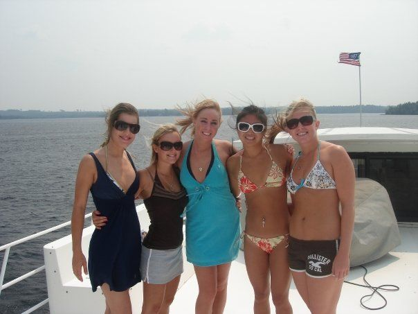
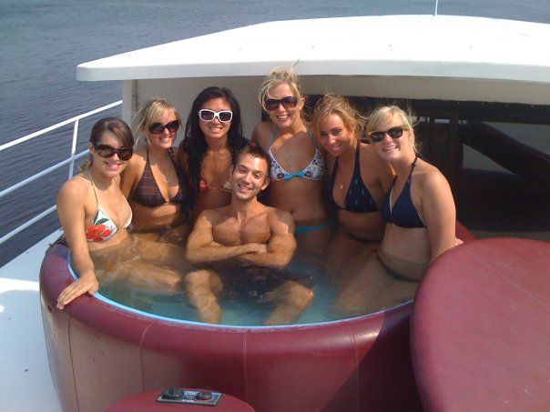
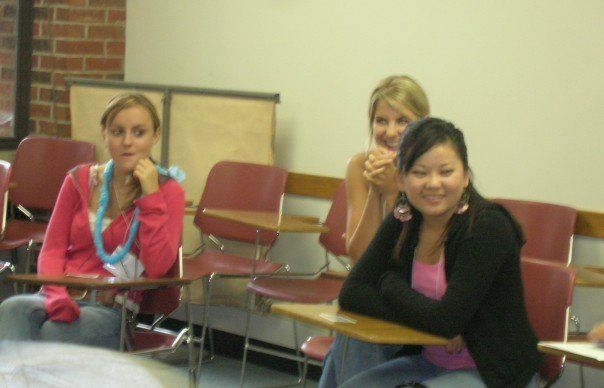
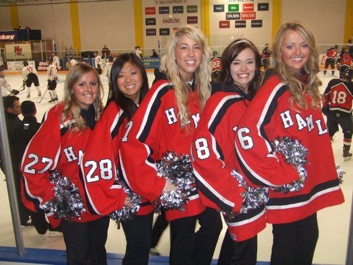

Obtaining a double major in accounting and business administration I fell in love with the black and white nature of numbers and the tax code.
“If you can get a C or higher in Tax Accounting you are destined to be an accountant,” my advisor told me.
Praying over every question on my Final Taxation exam, I figured if God wanted me to become an accountant I’d get a passing grade, a small portion of my life becoming clear.
When our professor passed out the exams, he made a comment that he had never seen someone get a 100% on one of his finals, the next lowest score being an 86.
Receiving mine back I squirmed, thinking I had failed, I looked down in shock at the bright red 100% scrawled across the bottom. Embarrassed, I quickly flipped it back over so nobody would know I was the one who pushed up the curve.
“Who do you think got the one hundred?” The guy next to me asked.
“I have no idea.”
He quickly pointed to the nerdy boy in the front row who was looking very proud,
“It must have been HIM.”
The chatter continued, pointing out the majority of men in the room as the culprits, not one person expecting it could be the pretty blonde cheerleader in the back.
Reflecting on this story a decade later I wonder why I was so ashamed of such an accomplishment.
Was it because I lacked the confidence that I was smart and destined for a career in numbers? Was it simply out of humility?
Or was it the grooming of the society I had grown up in, women didn’t belong in those roles.
After college I attended a Masters of Science program at the University of St. Thomas. A one year program that boasted a paid internship, often leading to a full-time position.
Graduating in the midst of the great 2009 recession, I figured this was my best bet at becoming gainfully employed.
The program was intense, less than 30 of us qualified. We were required to wear formal business attire, pantyhose included.
No bare legs were pushed into high heels in those halls.
In the accounting world the Mecca was becoming a Partner in one of the global Big Four Accounting Firms, this became my ambition.
Being wined and dined by each firm, I found myself drawn to PwC, one of the Big Four.
In my interview with the Tax Partner he asked me about my previous job doing direct sales.
“Give me your best pitch.”
I gave him my spiel on employees VS independent contractors and how our company boasted fair wages and workers compensation insurance.
I got the job.
Later over cocktails at a firm event, the partner told me he had never been given a sales pitch for transportation work in an interview before, “that was impressive, an interview I will remember.”
Midway through the grueling internship I was assigned one of the firms more challenging clients due to 14 plus hour days, including weekends and endless tie-outs.
Sitting at my cubicle desk close to 10 pm on a Tuesday, I was struck hearing the partner in the hallway reading a bedtime story to his kid over the phone.
“No I won’t be home for bedtime Honie, yes of course I love you.”
Knowing that motherhood and faith were something important to me, I googled mission trips.
Being a partner in a Big Four firm may not be for me after all, I thought.
Within minutes I stumbled upon the World Race, 11 countries in 11 months. I turned to my blurry eyed cube mate, I think I’m going to do this!
“You’re just exhausted, talk to me after 8 hours of sleep.”
I woke up even more energized, completing the online application.
Less than a week later I got a call,
"Are you interested in interviewing with us for Fall 2011?'
I was standing in a glass enclosed lunch room, surrounded by black suits thinking, well isn’t this ironic.
“Sure I’ll interview! When?” I asked.
Knowing it was nearly impossible to escape for 30 minutes during busy season, I figured I probably wouldn't be able to make it work.
“How does tomorrow at 11 am work?” the Adventures in Missions employee asked.
Let me ask my manager.
Surprisingly, she said of course. "Just be back by noon."
Not having time to go somewhere else, I found myself driving around downtown St. Paul in my pantyhose and skirt suit explaining who I was and that Yes! 11 months living out of a backpack serving Jesus sounded great.
The email arrived that afternoon, "you have been accepted to the 2011 Z Squad, leaving early fall."
STOP. Am I actually going to do this? I should probably talk to my mom first.
“Honie that sounds great and all but aren’t you hoping for a job offer starting full time this fall?”
I walked into the director of our accounting programs office even more motivated to prove everyone wrong.
“Pretend I wanted to take a year off and travel the world as a missionary, could I postpone my job offer?”
Not ever having that question posed, she looked at me quizzically, trying to decide if I was serious.
As the silent pause continued she stuttered, well it doesn’t hurt to ask.
A month later I was offered my dream job, a full time audit associate position at PricewaterhouseCoopers, working in downtown Minneapolis. We were celebrated by a fancy lunch of steaks and champagne with the firm partners.
The next day I walked into the HR managers office and proposed my plan.
“I guess you could do that but you’ll be behind a year in your career progression.”
With my eyes focused on making partner before the age of 35, I paused, “Yes, this is what I want to do.”
I accepted the offer, with a delayed start date.
I returned from the audit internship to finish the rest of my masters program, graduating that spring, my fellow colleagues I’m sure questioning my sanity.
While my cohort spent that summer studying for the CPA exam, I studied sleeping bags, malaria medications and how exactly to pack for an entire year.
To be continued...



